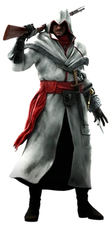

Home
Welcome to the Assassin's Creed Website, a collaborative encyclopedia about the Assassin's Creed series of games that anyone can view. The website has articles on books, database entries, characters, locations, missions, objects, organizations, skills, weapons, events, legends, and more, as well as images of many subjects.
Assassin's Creed is a series of action-adventure stealth video games developed mainly by Ubisoft and set in various historical periods. The series began with Assassin's Creed in 2007, and its most recent title is Assassin's Creed: Valhalla, released in November 2020.
Main Character
__________________________________________________________________


__________________________________________________________________
__________________________________________________________________
__________________________________________________________________
" My father wanted this life, Anna, not I. He came to this country with a dream and made the Narodnaya Volya his cause. I do not know if I have the strength to serve the Order of Assassins as he did."
―Nikolai Orelov to his wife.
Nikolai Andreievich Orelov was a Russian Assassin who lived during the late 19th and early 20th century. A member of the Russian sect of the Assassin Order, the Narodnaya Volya, Nikolai was, notably, closely involved in the hunt for the Imperial Sceptre of the Russian Emperors', a Piece of Eden.
He was also the great-grandfather of Daniel Cross, who would cause the fall of the Assassin Order generations later.
